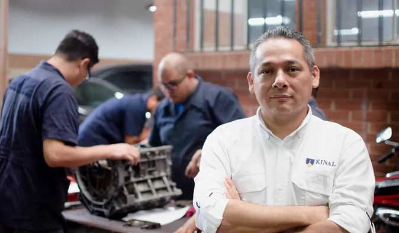

| Carrera Tecnica | Peritos Tecnicos | Educacion Basica |
|---|---|---|
|
Las carreras técnicas mejor vistas en Guatemala donde tu puedes salir con una preparación profesional y puedas aprovechar tus habilidades al máximo.  |
Se trabajan los programas técnicos y académicos con jóvenes entre 16 y 20 años para llevarlos a realizar una tarea calificada en alguna especialidad técnica con tres años de duración. Al cabo de los tres años el joven es apto para trabajar en el ramo técnico de la especialidad que eligió estudiar; el título obtenido le permitirá ingresar a la universidad. |
Kinal ofrece su programa de Educación General Básica para todos aquellos jóvenes que buscan una orientación técnica y excelencia académica. 
|
El Trabjo Bien Hecho
Kinal es un Centro Educativo privado, no lucrativo, dirigido a la formación técnica profesional de jóvenes y adultos, de beneficio colectivo y asistencia social en favor de los sectores más necesitados de la comunidad. Nuestro valor fundamental es enseñar a realizar el trabajo bien hecho, que sea la base de la superación de alumnos y el medio para servir a los demás.
Jovenes Beneficiados
|
25K
|
1500
|
5K
|
31.5K
|